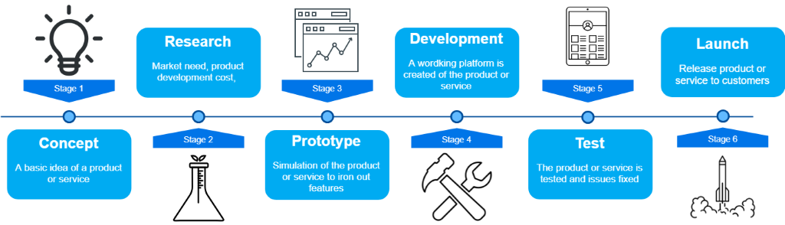

Project types 📋
The webpage is a tool for finding information about differetnt types of projects. Through this page, users can find general information, recommendations, guides, success criteria and failure factores for projects they are working on. Choose a project type from the list below:
Identify Project 🔍
Specify Characteristics
Lowest score: 1
Highest score: 5
Uncertainty
3Change
3Limitations
3Organizational complexity
3Impact on business
3Digitalization Projects
Characteristics
In a digitalization project there are two possible focus areas, digitalization and digital transformation.
- Digitalization - The adoption or increase in use of digital or computer technology by an organization, industry, country, etc.
- Digital transformation - DT is defined as the changes digital technologies can bring about in a company’s business model, which result in changed products or organizational structures or in the automation of processes
There are therefore two types of purposes of digitalization projects. If the project is focused on digital transformation, the purpose is to redesign the organization through the introduction of digital technologies, achieving benefits such as productivity improvements, cost reductions and innovation. These kinds of projects therefor share many characteristics with reorganization / restructuring projects. Digitalization projects are often related to a company's strategic perspective.
If the project is focused on digitalization alone, the purpose is to create value in the process by automating the process, improving the product/process or improving/simplifying communication. For the rest of this text, the focus will be on digital transformation as most digitalization projects also have effects on the business model to some degree.
All projects have a set of common characteristics that separate them from the everyday work in organizations. For a digitalization project we could expect these characteristics to have the following degree of presence in the project.
- Uncertainty is high in this type of project as many are affected by the transformation. There are also many possible solutions in digitalization projects.
- Change is a central characteristic of the project type, and this change is often the most important result (important impact).
- There are not so many limitations in this project type. There might be some time limitations and cost limitations, and limitations set by the end users/ those the project affect.
- As it often is important to involve all departments, and make the purpose and value of the digitalization clear to the entire organization, the organizational complexity is high. However, the digitalization projects are often internal and does not involve that many external parties.
- Impact on business is seen as a success criterion, and is therefore highly present in these kinds of projects.
This is a generic consideration of degree of presence in reorganization / restructuring projects, but it can be expected that individual projects will show individual differences.
Success criteria
- Create value in process
- Create positive impact on business
Success factors
-
Clarity of goals
- Make it clear to everyone in the organization what is being done, and why.
-
Participative project process
- As the digitalization impacts the business, it impacts everyone within the company. It is important that everyone is involved to succeed with the changes, so that the impact has positive effects.
- Good project manager (Knowledge and insight)
- Correct composition of project participants
- Motivated project participants
- Communication of project importance
- Involved and motivated management
- Clear project mandate
(s.60 I boka: Suksessfaktorer tilknyttet karakteristikk)
Pitfalls
- Not considering the changes the digitalization creates in the organization, and the people it affects. This can create resistance to the change.
- Not working toward the right goal. What transformation the company wants to achieve should be clearly defined.
- Silo working (Not involving all departments). The digitalization should be understood as important by everyone. Silo work can create lack of motivation.
- Declaring success to early. Implementing the new tools does not indicate success by itself. The tools should successfully be used to create change and value to processes.
- Lack of faith in digitalization. Should be a belief that the digitalization can bring about positive change and value creation.
Stakeholders
| End users | Very important stakeholder in digitalization projects. It is important to understand their needs, and to involve them in the project. This to ensure that the company does not encounter resistance to change, and that the change/impact will actually have positive effects. |
| Management | Involvement of the top management is important to generate motivation for the project, and to signal the importance of the project in the organization. The involvement of the management also ensures that the project has the necessary resources. |
| Project manager | The project manager is important for the project success. A good project manager will identify how the project will affect people, systems, processes and surroundings. This is necessary to effectively manage the project. |
| Project participants | Digitalization projects should involve the organization as a whole, as the project impacts the business. All participants in the projects are therefore important stakeholders, as they are drivers for the project (and change). |
Risks
| Risk | Measures |
|---|---|
Resistance to change
|
It is important with early involvement of those that are affected by the change. Stakeholder analysis is an important tool for the project. Change management should be an active focus. |
Lack of motivation
|
Clear goals, communication of importance and expected benefits is important to motivate participants. |
Lack of competence
|
A competent project manager, and a project team that is put together right is important. Where there is lack of competence, this should be filled through extra resources or learning within the project team. |
The new product/system affects other parts of the business in unwanted way
|
Need to check all interdependencies in the organization/business to make sure that you don’t get unexpected effects of the digitalization. |
Flow of information is poor
|
Establish a project organization that promotes communication across departments. Involve everyone in the company, workers on floor as well as management. |
| New product/system/software does not work with existing infrastructure | Performing pilot tests of systems, and communications with experts on new and existing systems is important to ensure that the new solution/system can be integrated with existing solutions and systems. |
Recommendations
1. Know how digital transformation can add value to your business
2. Create a good plan to achieve your organizational goals
3. Define the expected outcome of each initiative across your organization
4. Engage executives, leadership roles, and all employees in the digital transformation
5. List out existing technologies and capabilities
6. Perform continuous evaluation and modification
ICT- and software projects
Characteristics
Information and communication technology (ICT) and software projects, can be seen as a subcategory of restructuring projects, were the overall goal is to achieve change in systems, processes, and peoples work methods. But, for this project type the main deliverance is more concrete than in restructuring projects. In information and communication technology (ICT) and software projects, there are two possible main deliverances;
- Procurement of IT-solutions and software project.
- Development of IT-solutions and software projects.
All projects have a set of common characteristics that separate them from the everyday work in organizations. Although there always be some degree of variance for projects, the degree of the following characteristics can be expected to be present for the project type:
- Uncertainty: The degree of knowledge towards the ICT-solution or software can affect the degree of uncertainty in the project, and especially the for solutions with a high degree of innovation it might be difficult to predict the possible events, factors and the development over time.
- Change: As a main outcome, change is a central characteristic of the project type, and organizational change is the result of the project if it is successful.
- Limitations: There are not so many limitations in this project type. There might be some time limitations and cost limitations, and limitations set by the end users/ those the project affect. Restrictions, limitations or guidelines connected to the project and its outcome will vary by the different projects. In general, the solutions developed or procured will have some degree of limitations, but for the project type as general, this is not recognized as a key factor.
- Organizational complexity: The degree of complexity will vary by different factors. Examples can be the project size, how many people and processes that will be affected by the change, and the degree of change in the project's outcome. Number of departments and units involved, the need for internal and external competence and resources in need to achieve the set outcome.
- Impact on business: In projects with a high degree of change as a outcome, the impact on the business is usually high. The amount of criticality of the project will also affect this factor. The degree of impact the change will have on the business or strategy will usually also affect the access to and priority off resources during the project.
Success criteria
- Positive change in the wanted systems, processes, and/or peoples work methods.
- End users satisfied.
- Management satisfied.
Success factors
- Clarity of the expectations of the different stakeholders affected by the change, especially the end-user of the solution
- Involving project process
- Good project manager (Knowledge and insight)
- Correct mix of project participants
- Motivated participants
- Participative project process
- Correct composition of project participants
- Motivated project participants
- Early involvement of end-users
- Flexibility in the project plan
Pitfalls
- Misunderstand the scope of the project and the expectations of the main goal.
- Not having freequent small deliveries, instead of trying to handle everything at once.
- Resistance for change due to lack of involvement and communication of the scope and need for change.
Stakeholders
- End user/ those affected by the change
- Management
- Project praticipants
- Project manager
Risks
- The main challenge is to develop a full understanding of the stakeholder’s expectations, and make sure the outcome of the project meets those expectations- communication and early involvement.
- Resistance to change- Change management should be in focus, this too create acceptance through communication and involvement
- Not considering the changes the digitalization creates in the organization, and the people it affects. This can create resistance to the change.
- Silo working (Not involving all departments). The digitalization should be understood as important by everyone. Silo work can create lack of motivation.
- Declaring success to early. Implementing the new tools does not indicate success by itself. The tools should successfully be used to create change and value to processes.
- Lack of faith in digitalization. Should be a belief that the digitalization can bring about positive change and value creation.
Project organization
In project structures, both flexibility and resource control can be advantageous, however, the transfer of
knowledgeand competence can occur, elements that are important for successful process optimization and work tasks.
In functional structures, decisions may take a longer time and delays can therefore occur. In addition, silo thinking
may occur, in the overall understanding of the project's importance to the business, or how the end users can be
affected by the project result. Critical elements for this project type.
For ICT and software projects, therefore, a project organization with matrix structure is recommended, ie a combination
of the other two structures. The reason is the desire for efficient utilization of resources, exchange of experience and
interdisciplinarity. In this way, the involvement of stakeholders of the project and the final product can be achieved,
especially important in order to gain a good understanding of the processes and or tasks to be improved. A problem with
this type of organization, on the other hand, is that conflicts between prioritizing other tasks and the project, and that
a larger workload than normal can occur.
A matrix structure can occur in a weak, strong and balanced degree. Where the weak is aimed at functional structure, and
the strong against project structure. Since focus on the end users is central, a weak matrix structure should be avoided.
To prevent the disadvantages of a project structure, a balanced matrix structure may be preferable.
Recommendations
- Understand the wanted outcome
- Early communication, focus and involment of stakeholders (especially the end-users) to make sure the project covers the end-users needs and is directed to the wanted change
- Resistance to change
- Change resistance is a important factor when dealing with this project type, and a focus on change management is a key factor for success. This can be done by making sure that the need for.
- Lack of motivation
- Involvement of stakeholders and deliverance.
- Lack of competence
- Make sure that the project team have the needed competence, that the expertise in need is involved. It is also important to make sure that the end-user and management have the needed competence to use the solutions.
- The new product/system affects other parts of the business in unwanted way
- Need to check all interdependencies in the organization/business to make sure that you don’t get unexpected effects of the digitalization.
- New ICT- and software does not work with existing infrastructure
- Testing of the solutions before implementation, and use expertise in procurement decisions to avoid solutions that can't be used.
Reorganization/Restructuring Projects
Characteristics
Reorganization / restructuring projects are projects that introduce new work processes, reorganizes the organization, training
for use of new system, or shutdown of existing systems or processes.
Reorganization / restructuring projects are soft projects. According to the framework for analysis developed by Crawford &
Pollack (2004), softness and hardness of projects can be assessed in seven dimensions as shown by the figure below.
Important characteristics in Reorganization / restructuring projects are that the projects don't have physical deliverables,
but abstract. The projects also introduce change into the organization.
All projects have a set of common characteristics that separate them from the everyday work in organizations. For a
reorganization / restructuring project we could expect these characteristics to have the following degree of presence in
the project.
- Uncertainty is high in this type of project due to goals being ambiguously defined, and many possible solutions existing.
- Change is a central characteristic of the project type, and organizational change is the result of the project if it is successful.
- There are not so many limitations in this project type. There might be some time limitations and cost limitations, and limitations set by the end users/ those the project affect.
- The organizational complexity.
- As change is central in the project, you would expect an impact on the business. In some projects this impact will be mostly internal, changing the way the organization works. This does not necessarily affect what the business delivers. In other projects it restructures the business to the degree, where it changes what they deliver.
This is a generic consideration of degree of presence in reorganization / restructuring projects, but it can be expected that individual projects will show individual differences.
Success criteria
- Create positive change in organization
- End users satisfied
- Satisfied Management
Success factors
- Clarity of goals
- Participative project process
- Good project manager (Knowledge and insight)
- Correct composition of project participants
- Motivated project participants
- Change management

Pitfalls
- Forgetting the people who are affected by the change.
- Not managing expectations. There should be clarity in expected results and benefits.
- Not focusing on making people want to change, but on making the change happen.
- Losing focus on day to day business and customers during the change.
- Relying too much on the management to push the change.
Stakeholders
| End users | Very important stakeholder in organizational transformation. It is important to understand their needs, and to involve them in the project. This to ensure that the company does not encounter resistance to change, and that the change will actually have positive effects. |
| Management | Involvement of the top management is important to generate motivation for the project, and to signal the importance of the project in the organization. The involvement of the management also ensures that the project has the necessary resources. |
| Project manager | The project manager is important for the project success. A good project manager will identify how the project will affect people, systems, processes and surroundings. This is necessary to effectively manage the project. |
| Project participants | These stakeholders do not have much influence on the project, but are important to keep in mind during the project. It is important that they are not neglected during the project, and that the company can keep up with its “business as usual”. |
Risks
| Risk | Measures |
|---|---|
Resistance to change
|
It is important with early involvement of those that are affected by the change. Stakeholder analysis is an important tool for the project. Change management should be an active focus. |
Lack of motivation
|
Clear goals, communication of importance and expected benefits is important to motivate participants. |
Lack of competence
|
A competent project manager, and a project team that is put together right is important. Where there is lack of competence, this should be filled through extra resources or learning within the project team. |
Flow of information is poor
|
Important to communicate the intended goals and benefits of the project, and who will be affected. Should also be two-way communication in the project. This allows those affected by the change to communicate their needs and expectations. |
New Product Development Projects

New product development projects introduce new products to the marketplace. It typically involves all stages from idea, concept, research, prototyping, developing, testing, launch and market and sale. New products can be:
- Products that a business has not sold before or are familiar with but has been brought to the market by others.
- Products created by innovation and brought to the market for the first time. These products can be completely original products, or they can be products that has been modified and improved.
Characteristics
Success criteria
- Profit
- Increased market share and competition
Success factors
Robert G. Cooper has done several studies about new product development. From these studies it has been found
that there are significant differences between the products that achieve success and those that do not succeed
in the market. Cooper summarizes his finding to succeed in product development in 10 key points (ranked in
order of priority):
1. A superior differentiated product that adds value to the customer.
2. A well-defined product before the development phase.
3. A product that reflects customers demand.
4. Clear and sharp product definition early in the project.
5. Resources for and a well-planned market launch.
6. Incorporate stop/run decision points as part of the product development process.
7. Organize the product development around a cross-functional team.
8. Base the project development on the company’s competence and resources.
9. The world product – a global orientation in product development.
10. Support from top management - follows up the process
Pitfalls
The main challenges in product development projects is to create compliance between product complexity and degree
of innovation, with good routines for scope control, follow-ups, procurement of skilled technical resources and
close and good follow-up of top management.
According to the book “Winning at new products” by Robert G. Cooper, there are three main reason for failure:
-
Poor or lack of market research
- Which leads to lack of understanding consumers demand and market situation. -
Technical problems
- Related to design and production. This is often due to problems in the early stages of the product development process. -
Bad timing
- The reason is often technical problems, poor planning and lack of control. Missing the “window of opportunity” (the time which is the most beneficial to launch the product) often leads to failure.
Stakeholders
- Consumer
- Project team
- Product manager
- Top management
Risks
Risk:
- Lack of interest for product / Change of demand, need and expectation of customers.
- New competitors and products in the target market.
- Lack of financial and human resources.
Measure:
- Keep track on market situation and consumer demand through the whole project process.
- Thorough project planning to avoid going over budget.
Project organization
The project organisation consists of top management, project manager and project team:
- Top management supports the project with resources and keeps track on the development.
- The project manager has the overall responsibility for the project and ensures that the project is on progress, are within scope, plan and process and takes actions if there are deviations.
- The project team does the planning, analysis and develops the product.
Recommendations
Robert G. Cooper found through his studies thirteen key activities:
1. Initial engagement
- Invest in the project (human and financial resources).
2.Do early market research
- Initial market research; a quick and effective examination of market potential, needs and
competitive situation.
3. Early technical examination
- Early technical research that addresses questions such as whether the product can be developed,
how, opportunities for mass production and distribution. Investigation is often conducted as a
discussion within the company.
4. Do a detailed market research
- A thorough market analysis that addresses the user's wants and needs, concept studies, positioning
opportunities and the competitive situation. Often goes as interviews and surveys with future customer
groups.
5. Pre-development business and financial research
- The decision to enter a full development program. May include a financial analysis, risk assessments
and a qualitative business assessment.
6. Product development
- The actual development of the physical product.
7. Internal product testing
- Testing the product internally under controlled forms.
8. External product testing
- Testing the product in collaboration with customers. Customers can try to use the product in their
daily lives for a period.
9. Sample Sales
- The product can be offered in a test market. Try to sell the product to a limited number of customers or
in a limited geographical area.
10. Trial Production
A test production to see that the production equipment works properly.
11. Business analysis before final launch
- Here, the decision is made on final commercialization of the product. A final analysis before starting
the sale.
12. Start of production
- Start-up of full-scale production
13. Market launch
Full market launch. Implementation of the marketing plan.
Construction Projects
Characteristics
Constructions projects can be associated with building, demolition etc. Important characteristics in building projects are that the projects are affected by changing project specific environment and -limitations, and therefore has a high demand for/ is highly dependent of good project management and planning. The product of a building project is usually tangible and measurable by physical means.
- Uncertainty is medium high in this type of project due to a high amount of unknown information/details/values in the early stages. However, the uncertainty is excepted to decrease throughout the project life cycle.
- Change are in most cases, not a focus area in building project. The building is usually not affecting e.g. how people live.
- Building project can at some degree be limited by project specific context, such as parallel building project at site, cost and time limitations.
- Building projects are often associated with a high amount of involved contractors, parallel activities etc.
- There is in most cases a lot of money at stake in constructions projects. The outcome of the project can therefore be critical for involved organizations.
This is a generic consideration of degree of presence in building projects, it can be expected that individual projects will show individual differences.
Success criteria
Success criteria for building project is project specific. Some generic examples are:
- Profit Finished within a time limit
- Certified BEAM excellence
- TRI < 1 (HSE indicator)
Success factors
Literature present important contributing factors to be considered in the work of an achieving project success in a construction project:
- Early stage planning,
- project manager authority,
- choice of procurement strategy,
- choice of contractor,
- choice of project manager,
- and type of contract,
- information flow,
- clarity of requirements.
Pitfalls
- Ambiguous requirements
- Reacting Poorly to Community Concerns
- Going Over Budget
- The Unreliable Worker
- Scheduling Snafus- Schedules not lined up
- The “What Did We Just Hit?” Moment
- Permitting Hurdles
https://trimediaee.com/blog/environmental/8-construction-project-pitfalls-deal/
Stakeholders
| Project owner | Involvement of project owner is important to clarify needs and requirements |
| Project manager | The project manager is important for the project success. A good project manager will identify how the project will affect people, systems, processes and surroundings. This is necessary to effectively manage the project. |
| Project participants | Construction project often relies on deliveries of subcontractor services within a limited timeframe. Involvement of contractors can potentially have a positive effect on ie. efficiency- and HSE result, based on increase in flow of information. |
| End user | These stakeholders do not have much influence on the project, nevertheless, are they important to keep in mind during the project. |
Risks
| Risk | Measures |
|---|---|
Flow of information is poor
|
Appropriate communication medias must be in place. Procurement decisions (type of contract) can affect information flow. Should also be two-way communication in the project. |
Lack of competence
|
A competent project manager, and a project team that is put together right is important. Where there is lack of competence, this should be filled through extra resources or learning within the project team. |
Lack of resources
|
Systematic and thorough planning in early stages, as well as economical buffers, and management of critical paths. |
Missing deliverables
|
Supply chain management |
Interfering weather conditions
|
Slack in time and economy budgets |
Research Projects And Studies
Characteristics
- The main delivery is usually a report.
- The report can provide as a basis for a decision on the possible options for continuation of a project or provide as a basis for control.
Success criteria
- Finances for implementation
Success factors
- Structured and systematic risk management process
- Ability to problem solve
- Flexibility
- Expertise
- Good information flow
Pitfalls
- High degree of uncertainty about the outcome – the project can be easily influenced by human factors
- Lack of expertise
- Underestimating of risk factors
- Insufficient description of scope of work
- Lack of involvement from top management
- Assumptions
- Power struggle
- Conflict between line and project
Stakeholders
- Project owner
- Top management
- Project manager
Risks
- The project is not finished due to deadline
- The results of the project are not used
- Different opinion on content
Project Definition ✏️
This section explains the terms used in project management litterature. Most of the information is taken from the book "The road to success" (2016) by Bassam Hussein.
What is a project?
A project can be defined as:
«... a piece of planned work or an activity that is finished over a period of time and intended
to achieve a particular purpose »
- Cambridge dictionary
Project organization
A project organization is a structure that facilitates the coordination and implementation of project
activities. It is recommended to adjust the organization to each project's context. However, project
organizations often have some similarities like a project manager, project participants, and in bigger
projects, a project director.
Hussein (2016) presents the following ways to organize projects:
- Functional
- Project structure
- Matrix organization
1) Pace of change in technology
2) Resources available
3) Business area
4) Requirements for decision-making
Functional
Functional organizing can loosely be described as Business as usual. In these projects coordination responsibility usually is located at top level.Project structure
Project structure, also refers to as full authority projects are coordinated within the project.Matrix organization
Matrix organization is a structure for project whit shared authority. In these cases, authority and coordination of resources are shared between Project manager and department managers. Matrix organocations can further on be categorized as weak, strong or balanced based on allocation of authority.Project phases
Projects are by project management literature recommended to be sectioned of in phases, with interrelated tasks and these are arranged along a timeline. After each phase is allegedly finished, you find a decision gate, as can be seen in Figure 1. These gates promote an opportunity to stop, assess and evaluate value creation and the process before further action are taken.
Characteristics
Hussein (2016) addresses 5 types of project characteristic. How a specific project relates to each of the characteristic indicates potential challenges that can occur in the project life cycle, and should therefore be addressed. Hussein’s five characteristics:
- Uncertainty
- Change
- Limitations
- Organizational complexity
- Impact on business
Success
Success is a complex topic in project management field. A lot of factors effect the outcome of a project, and are to be addressed in the evaluation process. Following are some definitions presented to (hopefully in some extent) clarify one of the topic, in a short manner.
Success clusters
Husseins (2016) definitions:
- Project management success: This measures the degree to which the project has managed to satisfy various project and contextual constraints.
- Process success: This cluster is about how certain stakeholders, such as participants, line-mangers, end-users, and suppliers, perceive or experience project implementation phase.
- Project sucess: Measure project ability to achieve the intended transformation / ability to create an impact on business / strategy (value creation)
Success factors
Husseins (2016) definition:
A ‘success factor’ is a term used as a description of the ground rules that should be adhered to during project planning
and execution.
Success criteria
Husseins (2016) definition:
Criteria or indicators should be used to determine whether a project was a success or a failure?
Pitfall
A pitfall can be defined as:
… a likely mistake or problem in a situation
- Cambridge dictionary
Stakeholders
In the book "A guide to the Project Management Body of Knowlage (PMBOK Guide)" (2000), by the
Project Management Institute, a stakeholder is defined as:
"… individuals and organizations who are actively involved in the project, or whose interests may be
positively or negatively affected as a result of project execution or successful project completion"
According to Hussein (2016), which stakeholders who are actively involved in a project will depend on the
specific project. It is therefore recommended that important stakeholders are identified whit regards to project
specific context and environment.
A generic list presented in the book "DESIGNING AND IMPLEMENTING YOUR STATE-OF-THE-ART PERFORMANCE MEASUREMENT
SYSTEM" (2001), by Andersen and Fagerhaug, can be useful to identify the project contexts:
- Owners
- Management
- Customers
- Competitors
- Alliance partners
- Environment
- Employees
- Financial institutions
- Suppliers
- Authorities
Project risk management
The book "A guide to the Project Management Body of Knowlage (PMBOK Guide)" (2000), by the
Project Management Institute, refers to risk in project management context as:
“… an uncertain event or condition that, if it occurs, has a positive or negative effect on one
or more project objectives.”
Project risk management (PRM) is therefore necessary to avoid negative outcomes. In the research paper
"Project Risk Management Methodology: A Case Study of an Electric Energy Organization" (2016), by
Peixoto, Tereso, Fernandes and Almeida, they explained that PRM:
“…has the purpose to identify and prioritize risks that are likely to occur, providing guidance
information for the risks response, and monitor and control the project risks, by increasing the
probability and impact of occurrence of positive events (opportunities) and decreasing the probability
and impact of occurrence of negative events (threats) of the project”
Project planning
It is advantageous to be aware of some commonly used tools and methods for project planning before initiating a project. Project management literature (Hussein, 2016) mentions, the following list:
- Precedence Networks
- Resource chart
- Cost estimation
- S-Curve
About 💡
This webpage is developed by group 10 in the course TPK5115 - Applied Project Management, at NTNU 2019. The page is developed as a part of a project assignment in the course. The project assignment has learning in focus and the students will learn how to use project management methods. Through the project the students have to plan, develop and produce a digital learning aid in project management. The objectives for the project is to:
- Introduce the concepts of digitalization, digitazation and digital transformation.
- Develop understanding to the conditions needed in order to mange digitalisations projects effectively.
- Develop insights about the challenges associated with digitalization and digital transformation.